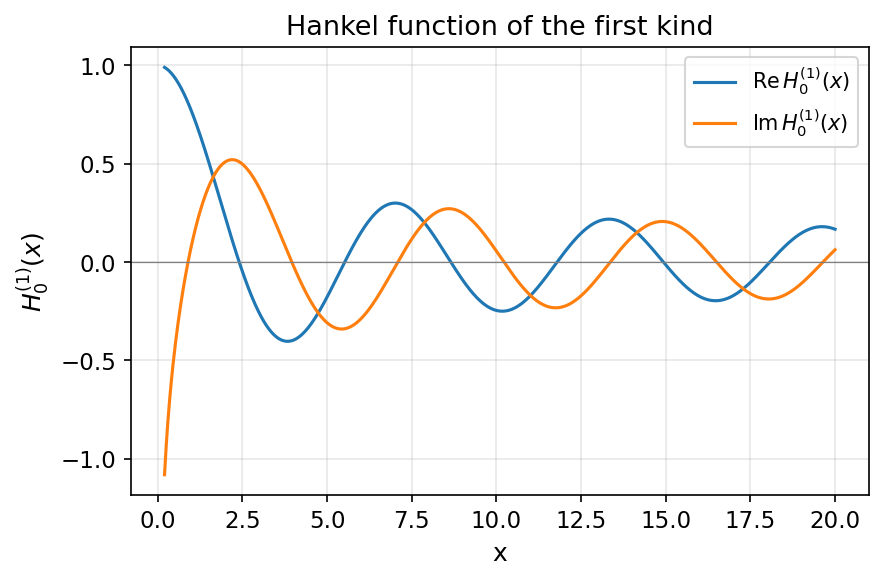

- Generated by
 1.13.2
1.13.2
|
fortran-bessels
Fast, accurate Bessel functions in pure modern Fortran
|
The Hankel functions (Bessel functions of the third kind) are the complex combinations
\[ H^{(1)}_\nu(x) = J_\nu(x) + i\,Y_\nu(x), \qquad H^{(2)}_\nu(x) = J_\nu(x) - i\,Y_\nu(x), \]
which behave like outgoing and incoming cylindrical waves, \( H^{(1,2)}_\nu(x) \sim \sqrt{2/(\pi x)}\, \exp\!\left[\pm i\left(x - \nu\pi/2 - \pi/4\right)\right] \) as \( x \to \infty \). For real \( x \) and real \( \nu \) they are complex conjugates, \( H^{(2)}_\nu(x) = \overline{H^{(1)}_\nu(x)} \).

| Quantity | Value |
|---|---|
besselh(nu, k, x) | \( H^{(k)}_\nu(x) \), returns complex(BK), with k ∈ {1, 2} |
hankelh1(nu, x) | \( H^{(1)}_\nu(x) \) = besselh(nu, 1, x) |
hankelh2(nu, x) | \( H^{(2)}_\nu(x) \) = besselh(nu, 2, x) |
| \( x \le 0 \) | NaN + NaN·i (built on \( Y_\nu \), undefined there) |
besselh, hankelh1, and hankelh2 are validated for integer order \( \nu \) only. They are evaluated by composing \( J_\nu + iY_\nu \), so they inherit the non-integer- \( \nu \) bugs of Bessel Functions of the Second Kind: Y. Non-integer \( \nu \) will return incorrect values; see roadmap item 07.besselh composes the Bessel Functions of the First Kind: J and Bessel Functions of the Second Kind: Y kernels directly. The fast large- \( x \) hankel_debye path is currently bypassed pending the non-integer- \( \nu \) fix, so accuracy follows that of \( J_\nu \) and \( Y_\nu \) for integer orders.